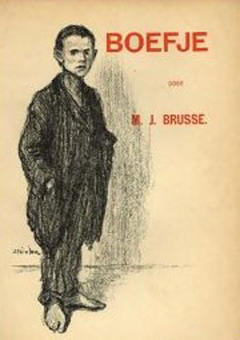
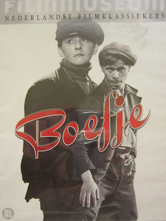
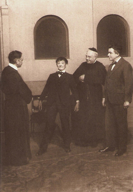

Boefje
Annie van Ees
Piet Bron
Piet Köhler
SYNOPSIS
Twelve year old Jan Grovers spends more time in the alleys of Rotterdam than with his family (though he occasionally looks after his three younger sisters, all of whom are called Mientje). Together with his best friend and partner in crime, Pietje Puk, he plans to travel to America to get rich.
When a local clergyman takes pity on the boy and tries to teach him good manners, Boefje at first rebels. However, once he is sent to a strict boarding school, he takes an interest in music, specifically the pipe organ.
German director Detlef Sierck fled the Nazis in 1937. He went first to Italy, then France, and shot this film in Holland just before leaving for America with his wife in 1939. Sierck left before editing was completed, without seeing the finished film, and went to work in Hollywood under the anglicised name of Douglas Sirk.
The lead role of Jan Grovers, a 12-year-old boy, is played by a 46-year-old woman, Annie van Ees, who had played the same role on the stage more than 1,500 times, beginning in 1923. Boefje would be her only screen performance. The film was scheduled to screen at the first ever Cannes Film Festival, in competition for the Palme d'Or, but the festival was postponed and then cancelled when Germany invaded Poland on the festival's opening day,1 September 1939.


